library(msae)
data(datasae3)4 Multivariate Fay–Herriot
4.1 Stable FH estimators over T time periods
This section describes procedures that yield stable small area estimators for each of D areas over T subsequent time instants.
MFH estimation procedure for T time instants: Step 1 Compute the selected direct area estimators for each area d = 1, . . . , D for each time t = 1, . . . , T, and estimators of their corresponding sampling variances and covariances.
Step 2 Select the area-level auxiliary variables for each time instant in the MFH model. A simple approach is to perform a model selection procedure in a linear regression model without the area effects for each time instant t = 1, . . . , T .
Step 3 Fit MFH3 model and test whether the area-time effects (ud1, . . . , udT ) are homoscedastic or not. If we reject the homoscedasticity of variances, consider MFH3 model. Otherwise, consider MFH2 model.
Step 4 Check the selected model assumptions, including linearity, normality of pre- dicted area effects and standardized model residuals, and the presence of outlying areas.
Step 5 In case of clear systematic model departures, the model should be changed. In case of isolated departures because of outlying areas, either do not obtain the MFH estimate for those areas or change some aspect of the model or the data. Then, go to Step 2.
Step 6 If model assumptions hold, using the above direct estimates and estimated sampling variances and covariances, and the selected auxiliary variables, compute MFH estimators for, d = 1, . . . , D and t = 1, . . . , T , and their corresponding estimated MSEs.
The functions eblupMFH2() and eblupMFH3() from the R package msae (Per- matasari and Ubaidillah, 2022) compute the EBLUPs and their MSE estimates under the MFH models 2 and 3, respectively. The calls to these functions are: \(eblupMFH2(formula, vardir, MAXITER = 100, PRECISION = 1e-04, data)\) or \(eblupMFH3(formula, vardir, MAXITER = 100, PRECISION = 1e-04, data)\).
The arguments of these two functions are the same, differing only in the outputs. They require specifying a list with T R formula objects, one for each time instant, separated by commas. In each of these regression formulas (one for each time instant), we place the vector of direct estimates on the left-hand side and the area-level independent variables on the right-hand side, separated by “+”. As usual, by default an intercept is automatically included in each regression formula.
As in the case of the eblupFH() function, they also require specifying the estimated sampling variances and covariances of the direct estimators for each area and time in the argument vardir. The user can also modify the maximum number of iterations, MAXITER, which is set by default to 100, and the convergence tolerance criteria, PRECISION, of the Fisher-scoring algorithm, which is set to 1e-4. The final argument, data, can be optionally specified to indicate a data object that includes the variables found in formula and vardir as its columns. Similar to the eblupFH() function, these functions do not accept NA values, and they will not return estimates for areas with zero sample sizes. Consequently, such areas should be excluded from the dataset.
Both functions return a list containing the following objects: eblup, a vector of EBLUPs for the areas; MSE, a data frame with the estimated mean squared errors of the EBLUPs; randomEffect, a data frame containing the predicted area-time effects; Rmatrix, a diagonal matrix with the sampling errors; and fit, a list with additional information from the model fitting. In the fit list, we can find the fitting method used (method); a logical value indicating the convergence of the Fisher scoring algorithm (convergence); the number of iterations performed by the Fisher scoring algorithm (iterations); a data frame containing the estimated regression coefficients in the first column, their standard errors in the second, the t statistics in the third, and the p-values of the significance of each coefficient in the last column (estcoef); a data frame with the estimated random effects variance (refvar); a data frame with the estimated autocorrelation coefficient ρ of the random effects; and the estimated Fisher information matrix (informationFisher).
The function eblupMFH3() additionally includes in the fit list, a contrast to test the homogeneity of random effects variance, called refvarTest. This test helps the user to choose between the heteroscedastic Model 3 or the homoscedastic Model 2, for a particular data set.
Example 1 below illustrates the calculation of MFH estimators of area poverty rates for T time instants, using the functions eblupMFH2() and eblupMFH3() of the R package msae (Permatasari and Ubaidillah, 2022).
4.1.1 Example 1 (MFH estimators of poverty rates for T time periods, in R)
In this example, we use the data set datasae3 from the R package msae (Permatasari and Ubaidillah, 2022). This data set contains simulated data generated under a FH model with heteroscedastic AR(1) area-time effects. There are two auxiliary variables, X1 and X2. Direct estimates for time instants 1,2 and 3 are given in Y1, Y2, and Y3, respectively. The elements of the variance-covariance matrix of the sampling errors are given in v1, v2, v3, v12, v13 and v23.
We first load the package and the data set:
Step 1: The direct area estimators and their sample variances are already given in the dataset. Step 2: We should select the auxiliary variables at each time point. This example is only for illustration of application of the R function, and hence we use all the available variables, but we should emphasize the importance of this variable selection process in real-world applications. Step 3: In order to choose between the two alternative MFH models with heteroscedastic or homoscedastic area-time effects, we fit the heteroscedastic Model 3, and then check for the equality of the variances over the three time points. Hence, we use the function eblupMFH3 to fit the model:
Fo <- list(f1=Y1~X1+X2,
f2=Y2~X1+X2, f3=Y3~X1+X2)
vardir <- c("v1", "v2", "v3", "v12", "v13", "v23")
m3 <- eblupMFH3(Fo, vardir, data=datasae3)Next we check the equality of the random effect variances. For this, we use the results of a hypothesis test included in the output of the function eblupMFH3: \(m3\)fit\(refvarTest\).
This test tests the null hypothesis that the variances \(σ^2\) at each pair of instants t and s are equal against the alternative that they are not. In this case, at significance level of 0.05, we reject the equality of variances between t = 3 and t = 1, as well as between t = 3 and t = 2. Note that this is a multiple test, and hence it is advisable to adjust the significance level. In this case, the tests clearly indicate heteroscedasticity, and we proceed with Model 3. If these tests supported equality of variances, then we would use instead the function eblupMFH2 for estimation.
Step 4: We now verify the assumptions of the MFH3 model. This includes assessing linearity, the normality of the predicted area effects and standardized residuals, as well as checking for the presence of outlying areas. We first check the linearity assumption. This can be addressed by examining the scatter plot of residuals against predicted values (EBLUPs). The plot is generated for each of the T = 3 time periods.
resids_3 <- cbind(datasae3$Y1-m3$eblup$Y1, datasae3$Y2-m3$eblup$Y2, datasae3$Y3-m3$eblup$Y3)
layout(matrix(1:3,nrow = 1, byrow = TRUE))
plot(m3$eblup$Y1,resids_3[,1],pch=19,xlab="EBLUPs t=1",ylab="Residuals t=1")
plot(m3$eblup$Y2,resids_3[,2],pch=19,xlab="EBLUPs t=2",ylab="Residuals t=2")
plot(m3$eblup$Y3,resids_3[,3],pch=19,xlab="EBLUPs t=3",ylab="Residuals t=3")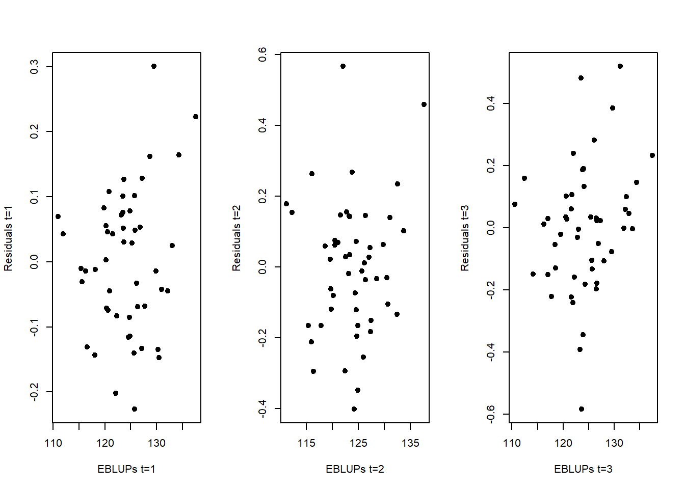
These three plots do not provide evidences against the linearity assumption. We now evaluate the normality assumption of residuals, again for the 3 time periods:
layout(matrix(1:2,nrow = 1, byrow = TRUE))
hist(resids_3[,1], probability=TRUE, main="",xlab="Residuals t=1", ylim=c(0,3.7))
mean_est <- mean(resids_3[,1])
sd_est <- sd(resids_3[,1])
curve(dnorm(x, mean=mean_est, sd=sd_est), add=TRUE, col="red", lwd=2)
qqnorm(resids_3[,1], main="")
qqline(resids_3[,1], col="red") 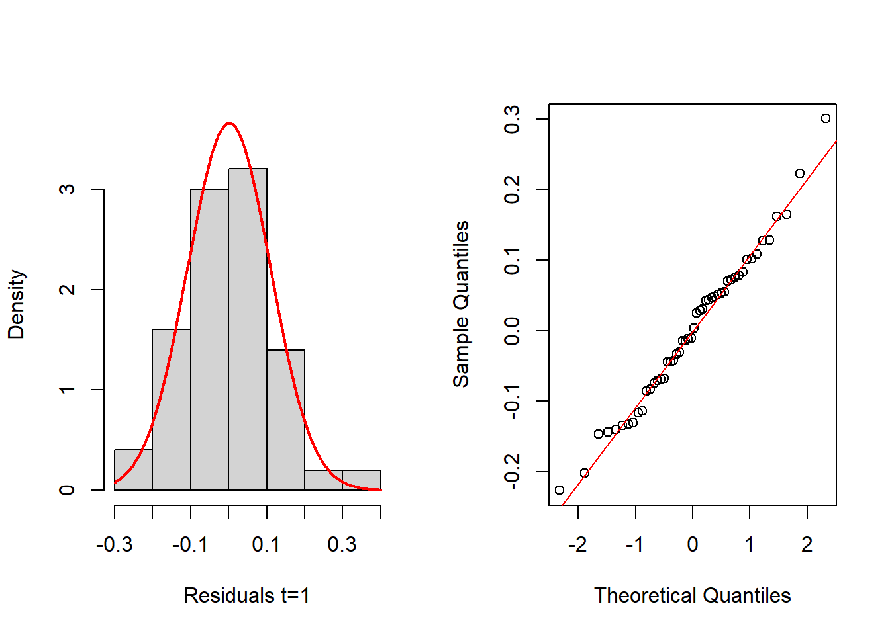
shapiro.test(resids_3[,1])
Shapiro-Wilk normality test
data: resids_3[, 1]
W = 0.98616, p-value = 0.8202layout(matrix(1:2,nrow = 1, byrow = TRUE))
hist(resids_3[,2], probability=TRUE, main="",xlab="Residuals t=2")
mean_est <- mean(resids_3[,2])
sd_est <- sd(resids_3[,2])
curve(dnorm(x, mean=mean_est, sd=sd_est), add=TRUE, col="red", lwd=2)
qqnorm(resids_3[,2], main="")
qqline(resids_3[,2], col="red") 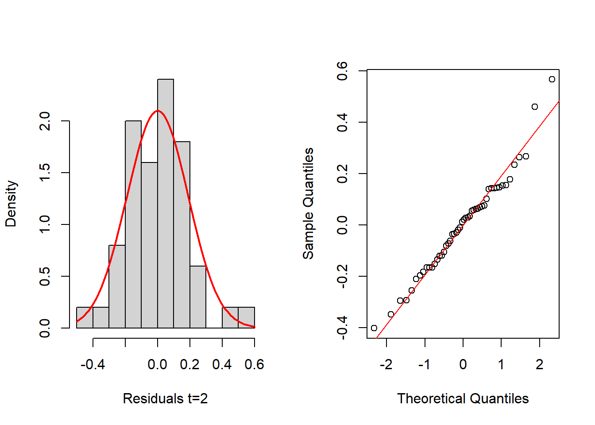
shapiro.test(resids_3[,2])
Shapiro-Wilk normality test
data: resids_3[, 2]
W = 0.97649, p-value = 0.4151layout(matrix(1:2,nrow = 1, byrow = TRUE))
hist(resids_3[,3], probability=TRUE, main="",xlab="Residuals t=3")
mean_est <- mean(resids_3[,3])
sd_est <- sd(resids_3[,3])
curve(dnorm(x, mean=mean_est, sd=sd_est), add=TRUE, col="red", lwd=2)
qqnorm(resids_3[,3], main="")
qqline(resids_3[,3], col="red") 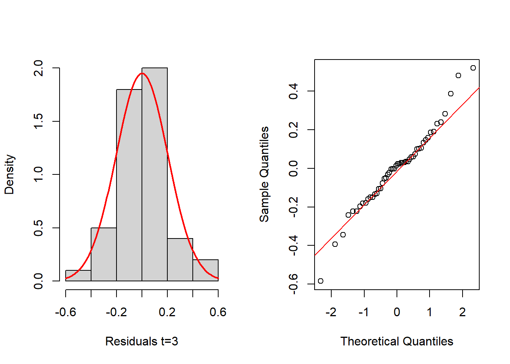
shapiro.test(resids_3[,3])
Shapiro-Wilk normality test
data: resids_3[, 3]
W = 0.97556, p-value = 0.3833In this case, the above histograms and Q-Q normal plots, as well as the Shapiro-Wilk tests, indicate nothing against the normality assumption of residuals. We next evaluate the normality of the random effects. Luckily, the function eblupMFH3 provides the random effects in its output, for the three time periods:
ran_eff <- m3$randomEffect
layout(matrix(1:2,nrow = 1, byrow = TRUE))
hist(ran_eff$Y1, probability=TRUE, main="",xlab="Random Effects", ylim = c(0,0.45))
mean_est <- mean(ran_eff$Y1)
sd_est <- sd(ran_eff$Y1)
curve(dnorm(x, mean=mean_est, sd=sd_est), add=TRUE, col="red", lwd=2)
qqnorm(ran_eff$Y1, main="")
qqline(ran_eff$Y1, col="red") 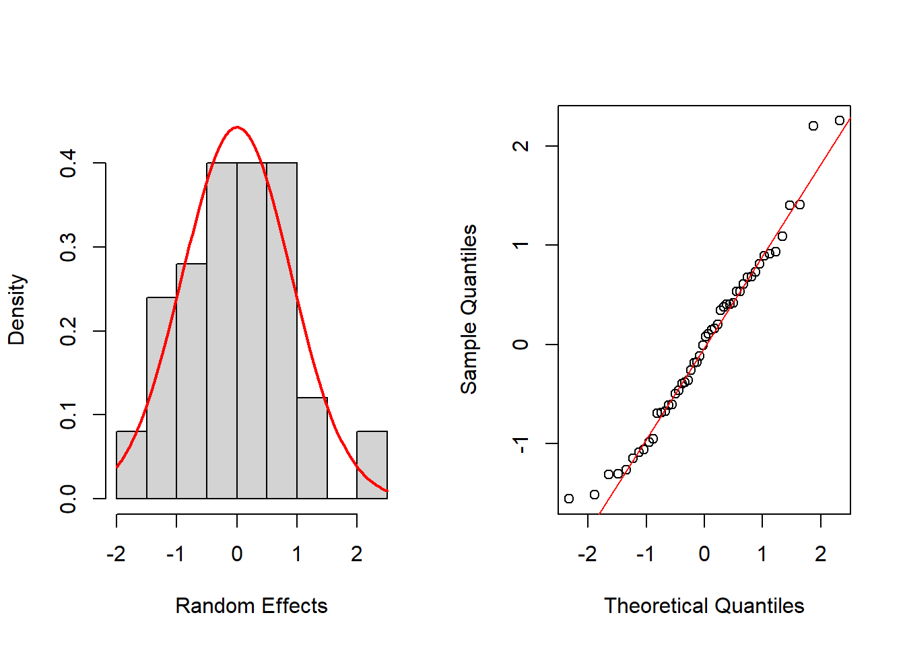
shapiro.test(ran_eff$Y1)
Shapiro-Wilk normality test
data: ran_eff$Y1
W = 0.97539, p-value = 0.3778layout(matrix(1:2,nrow = 1, byrow = TRUE))
hist(ran_eff$Y2,probability=TRUE,main="",xlab="Random Effects",breaks=5)
mean_est <- mean(ran_eff$Y2)
sd_est <- sd(ran_eff$Y2)
curve(dnorm(x, mean=mean_est, sd=sd_est), add=TRUE, col="red", lwd=2)
qqnorm(ran_eff$Y2, main="")
qqline(ran_eff$Y2, col="red") 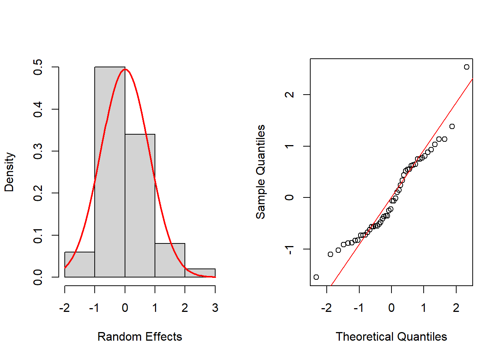
shapiro.test(ran_eff$Y2)
Shapiro-Wilk normality test
data: ran_eff$Y2
W = 0.95267, p-value = 0.04398layout(matrix(1:2,nrow = 1, byrow = TRUE))
hist(ran_eff$Y3, probability=TRUE, main="",xlab="Random Effects")
mean_est <- mean(ran_eff$Y3)
sd_est <- sd(ran_eff$Y3)
curve(dnorm(x, mean=mean_est, sd=sd_est), add=TRUE, col="red", lwd=2)
qqnorm(ran_eff$Y3, main="")
qqline(ran_eff$Y3, col="red") 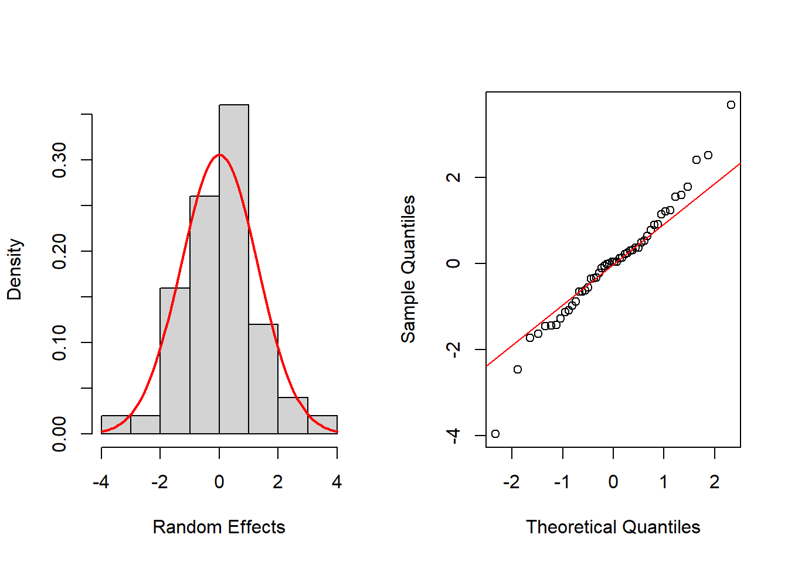
shapiro.test(ran_eff$Y3)
Shapiro-Wilk normality test
data: ran_eff$Y3
W = 0.97513, p-value = 0.3692Again, histograms and Q-Q normal plots show no evidences of departure from normality, while the Shapiro-Wilk test also supports normality for all time periods at the usual significance level of 0.05, except for t = 2, which is supported at 0.01 level.
Step 5: Since no indications are found against the MFH3 model assumptions, we proceed to obtain the small area estimates, as well as their estimated MSEs. These are already been generated at output of the function together with the model fit, and can be printed as follows. \(m2\)eblup$ # To see the EBLUPs \(m2\)MSE$ # To see estimated MSEs of EBLUPs
We next illustrate the use of the function eblupMFH2, which should be used in the case of homoscedastic area-time effects over time. For this, we employ datasae2 from the R package msae (Permatasari and Ubaidillah, 2022). In this new data set, again X1 and X2 are the auxiliary variables, and Y1, Y2, and Y3 are the direct estimates at times 1, 2, and 3, respectively. The elements of the variance-covariance matrix of the sampling errors are provided in the variables v1, v2, v3, v12, v13, and v23. Again, we first load the package and the data set:
library(msae)
data(datasae2)We now fit model MFH2 and check the model assumptions:
Fo <- list(f1=Y1~X1+X2,
f2=Y2~X1+X2, f3=Y3~X1+X2)
vardir <- c("v1", "v2", "v3", "v12", "v13", "v23")
m2 <- eblupMFH2(Fo, vardir, data=datasae2)
m2$eblup # To see the EBLUPs Y1 Y2 Y3
1 133.11 132.45 132.43
2 121.38 120.53 119.37
3 121.36 121.43 121.42
4 117.38 118.03 117.13
5 125.11 124.95 124.39
6 126.60 126.44 126.24
7 121.63 122.53 123.14
8 128.87 128.24 128.38
9 133.72 135.14 134.88
10 120.21 120.50 120.57
11 127.48 126.93 127.01
12 127.75 127.83 127.38
13 126.17 126.28 126.36
14 117.20 117.41 117.59
15 124.88 124.13 123.33
16 119.66 119.59 119.68
17 118.07 117.70 118.28
18 126.11 126.26 126.68
19 117.92 118.28 118.59
20 130.23 130.05 129.84
21 120.79 121.42 122.09
22 128.44 128.28 128.52
23 124.22 124.13 123.72
24 124.81 123.99 124.32
25 123.56 122.82 122.43
26 129.03 129.27 129.49
27 124.09 124.13 124.39
28 124.12 124.24 125.02
29 119.82 120.62 120.53
30 119.91 119.44 118.61
31 125.20 124.70 123.07
32 127.43 128.19 128.86
33 128.02 127.48 127.50
34 131.37 131.94 131.90
35 126.15 125.13 125.67
36 122.84 123.86 124.25
37 115.91 115.59 115.63
38 122.95 123.40 122.79
39 119.37 119.46 119.31
40 123.10 124.22 123.90
41 125.85 125.66 124.47
42 120.57 121.42 121.42
43 122.73 122.24 122.52
44 126.63 125.68 125.10
45 126.39 126.83 126.47
46 126.73 127.06 128.06
47 125.50 126.05 127.22
48 129.26 128.67 128.50
49 121.72 122.23 121.97
50 133.12 132.55 132.80m2$MSE # To see the estimated MSEs of EBLUPs Y1 Y2 Y3
1 0.091458 0.16358 0.23077
2 0.091516 0.16382 0.23122
3 0.090675 0.16032 0.22464
4 0.091326 0.16303 0.22974
5 0.090705 0.16045 0.22488
6 0.091248 0.16270 0.22913
7 0.090540 0.15976 0.22359
8 0.090636 0.16016 0.22434
9 0.091453 0.16356 0.23073
10 0.091002 0.16168 0.22720
11 0.090798 0.16084 0.22561
12 0.090721 0.16051 0.22500
13 0.090585 0.15995 0.22394
14 0.091286 0.16286 0.22943
15 0.090624 0.16011 0.22424
16 0.091357 0.16316 0.22998
17 0.090914 0.16132 0.22652
18 0.090681 0.16035 0.22469
19 0.090854 0.16107 0.22604
20 0.091048 0.16187 0.22756
21 0.090902 0.16127 0.22642
22 0.090761 0.16068 0.22532
23 0.090572 0.15989 0.22384
24 0.090554 0.15982 0.22370
25 0.091682 0.16451 0.23253
26 0.090862 0.16110 0.22611
27 0.090613 0.16007 0.22416
28 0.090568 0.15988 0.22380
29 0.091143 0.16227 0.22831
30 0.091106 0.16211 0.22801
31 0.090708 0.16046 0.22491
32 0.090695 0.16041 0.22480
33 0.090834 0.16099 0.22589
34 0.091157 0.16233 0.22842
35 0.090599 0.16001 0.22405
36 0.090701 0.16043 0.22485
37 0.091466 0.16361 0.23084
38 0.091331 0.16305 0.22978
39 0.090977 0.16158 0.22701
40 0.091079 0.16200 0.22781
41 0.091038 0.16183 0.22749
42 0.090656 0.16025 0.22450
43 0.090963 0.16152 0.22690
44 0.090697 0.16042 0.22482
45 0.090576 0.15991 0.22387
46 0.090632 0.16015 0.22431
47 0.091277 0.16283 0.22936
48 0.092014 0.16589 0.23512
49 0.090601 0.16002 0.22407
50 0.091675 0.16448 0.232474.2 Spatio-temporal FH estimators over T time periods
This section describes an extension of the FH model by Marhuenda et al. (2013), which incorporates spatial correlation between neighboring areas and temporal correlation over T time instants, leading to more stable small area estimates over time.
STFH estimation procedure for T time instants: Step 1 Compute the selected direct area estimators for each area, d = 1, . . . , D, and for each time t = 1, . . . , T , and estimators of their corresponding sampling variances.
Step 2 Select the area-level auxiliary variables for each time instant in the STFH model. A simple approach is to perform a model selection procedure in a linear regression model without the area effects for each time instant t = 1, . . . , T .
Step 3 Fit the STFH model and check the model assumptions, including linearity, normality of predicted area effects and standardized model residuals, and the presence of outlying areas, for each time instant T .
Step 4 In case of clear systematic model departures, the model should be changed. In case of isolated departures because of outlying areas, either do not obtain the STFH estimate for those areas or change some aspect of the model or the data. Then, go to Step 2.
Step 5 If model assumptions hold, using the above direct estimates, their estimated sampling variances, and the selected auxiliary variables, compute STFH estimators for each area d = 1, . . . , D and each time t = 1, . . . , T , and their corresponding estimated MSEs.
EBLUPs for all areas and time instants, and parametric bootstrap MSE estimates can be obtained calling functions eblupSTFH() and pbmseSTFH() respectively. The calls to these functions are: \(eblupSTFH(formula, D, T, vardir, proxmat, model = "ST", MAXITER =100, PRECISION = 0.0001, data)\) \(pbmseSTFH(formula, D, T, vardir, proxmat, B = 100, model = "ST", MAXITER = 100, PRECISION = 0.0001, data)\)
Some of the arguments are exactly the same as in the functions for FH model described in Section 4. Among the additional arguments, we have the number of areas D and the number of time periods T for each area. We remark that these functions may be used only when data are available for all the D domains at all T time periods. Moreover, data in formula and vardir must be sorted in ascending order by time instant, for each domain. Note that a single formula is specified in this function, unlike in the functions for the MFH modes of Section 5. The argument model can be chosen between the default value ST (AR(1) time-effects within each domain) or value S (with uncorrelated time effects within each domain). The rwo-standardized proximity matrix, W, must be also given as input in proxmat. The elements of this matrix are in [0,1], zeros on the diagonal and rows adding up to 1, as described above.
The function pbmseSTFH() providing bootstrap MSE estimates requires additionally to specify the number of bootstrap replicates B. A number of bootstrap replicates B ≥ 400 is advisable to achieve stable MSE estimates. By default, the argument B is set to 100 to save computing time. To obtain the same MSE estimates every time the function pbmseSTFH() is run, the seed for random number generation should be fixed previously using set.seed().
Example 2 illustrates the calculation of STFH estimators of area poverty rates for T time instants, using the above functions.
4.2.1 Example 4 (Spatio-temporal FH estimators of poverty rates, in R)
In this example, we use the data set spacetime included in the R package sae, which contains synthetic area level data for T = 3 time points, for each of D = 11 areas. The data set contains the following variables: Area, area code, Time, time point, X1 and X2, the auxiliary variables for each area and time instant, Y2, direct estimates for each area and time instant, and Var, sampling variances of the direct estimators. We calculate EBLUPs of the means for each area at each time, based on the STFH model with prox- imity matrix given in the data set spacetimeprox. We also obtain the corresponding MSE estimates by parametric bootstrap. The steps of the STFH procedure described above should be followed but, in this example, we only illustrate the calculation of the small area estimators and their estimated MSEs.
We first load the two data sets and obtain the number of areas and of time instants. Then, we apply the function pbmseSTFH() that delivers both, the STFH estimates and their estimated MSEs:
library(sae)
data("spacetime")
data("spacetimeprox")
D <- nrow(spacetimeprox) # number of areas
T <- length(unique(spacetime$Time)) # number of time periods set.seed(123)
STFH <- pbmseSTFH(Y ~ X1 + X2, D, T, vardir = Var, spacetimeprox, data = spacetime)
Bootstrap procedure with B = 100 iterations starts.
b = 1
b = 2
b = 3
b = 4
b = 5
b = 6
b = 7
b = 8
b = 9
b = 10
b = 11
b = 12
b = 13
b = 14
b = 15
b = 16
b = 17
b = 18
b = 19
b = 20
b = 21
b = 22
b = 23
b = 24
b = 25
b = 26
b = 27
b = 28
b = 29
b = 30
b = 31
b = 32
b = 33
b = 34
b = 35
b = 36
b = 37
b = 38
b = 39
b = 40
b = 41
b = 42
b = 43
b = 44
b = 45
b = 46
b = 47
b = 48
b = 49
b = 50
b = 51
b = 52
b = 53
b = 54
b = 55
b = 56
b = 57
b = 58
b = 59
b = 60
b = 61
b = 62
b = 63
b = 64
b = 65
b = 66
b = 67
b = 68
b = 69
b = 70
b = 71
b = 72
b = 73
b = 74
b = 75
b = 76
b = 77
b = 78
b = 79
b = 80
b = 81
b = 82
b = 83
b = 84
b = 85
b = 86
b = 87
b = 88
b = 89
b = 90
b = 91
b = 92
b = 93
b = 94
b = 95
b = 96
b = 97
b = 98
b = 99
b = 100 The bootstrap procedure for MSE estimation displays the iteration number for each step, as follows: Bootstrap procedure with B = 100 iterations starts. Once we have obtained the STFH estimators, we compute their CVs, and the same is done for the direct estimators. We print the results for the last time instant (T = 3):
cv.STFH <- 100 * sqrt(STFH$mse) / STFH$est$eblup
cv.DIR <- 100 * sqrt(spacetime$Var) / spacetime$Y
results <- data.frame(Area = spacetime$Area, Time = spacetime$Time,
DIR = spacetime$Y, eblup.STFH = STFH$est$eblup, cv.DIR, cv.STFH)
results.lasttime <- results[results$Time == 3, ]
print(results.lasttime, row.names = FALSE) Area Time DIR eblup.STFH cv.DIR cv.STFH
2 3 0.261484 0.27343181 10.944523 7.251764
3 3 0.175358 0.17722992 7.777336 6.851550
8 3 0.096230 0.09653879 6.059391 6.153638
12 3 0.122160 0.13740348 21.904205 14.736419
13 3 0.294176 0.29129477 8.812059 5.508984
16 3 0.412106 0.31887378 13.584403 7.220082
17 3 0.057924 0.06912566 25.195980 21.078426
25 3 0.209146 0.17377084 15.411972 13.717529
43 3 0.148671 0.14398844 15.788815 13.157155
45 3 0.234361 0.22810227 9.550663 8.284190
46 3 0.137869 0.14354272 8.853735 7.992519Next we plot the STFH and the direct estimates together for comparison. Additionally, we plot their corresponding CVs. The following R code generates both plots:
layout(1)
results.lasttime <- results.lasttime[order(results.lasttime$cv.DIR), ]
plot(results.lasttime$DIR, type = "n", xlab = "area (time=3)", ylab = "Estimate",ylim = c(0.05, 0.45), cex.axis = 1.5, cex.lab = 1.5, xaxt = "n")
axis(1, 1:11, results.lasttime$Area, cex.axis = 1.5)
points(results.lasttime$DIR, type = "b", col = 1, lwd = 2, pch = 1)
points(results.lasttime$eblup.STFH, type = "b", col = 4,lwd = 2,pch = 4)
legend("top", legend = c("Direct", "EBLUP STFH"), ncol = 2, col = c(1, 4), lwd = rep(2, 2), pch = c(1, 4), cex = 1.3)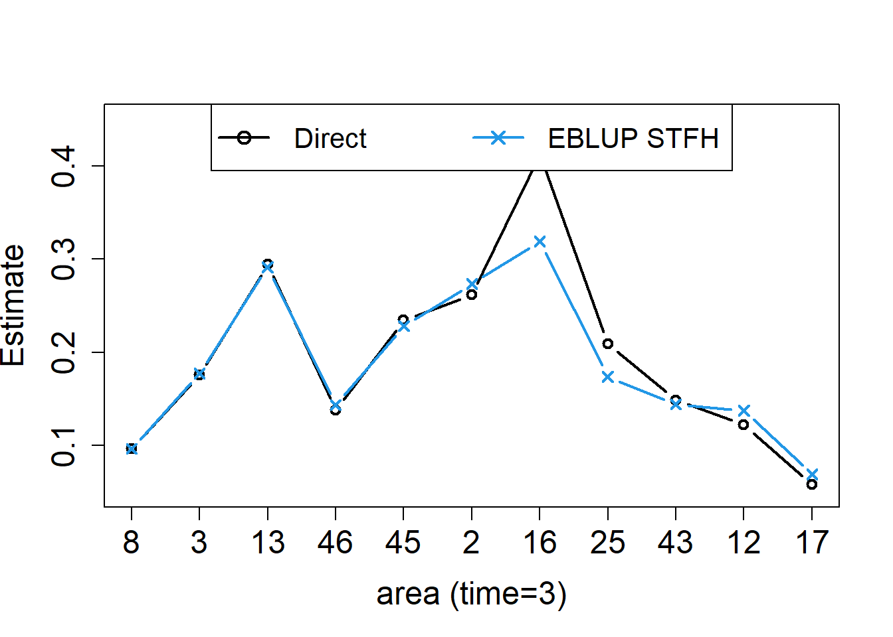
plot(results.lasttime$cv.DIR, type = "n", xlab = "area (time=3)", ylab="CV",cex.axis = 1.5, cex.lab = 1.5, xaxt = "n")
axis(1, 1:11, results.lasttime$Area, cex.axis = 1.5)
points(results.lasttime$cv.DIR, type = "b", col = 1, lwd = 2, pch = 1)
points(results.lasttime$cv.STFH, type = "b", col = 4, lwd = 2, pch = 4)
legend("top", legend = c("Direct", "EBLUP STFH"), ncol = 2, col=c(1,4), lwd = rep(2, 2), pch = c(1, 4), cex = 1.3)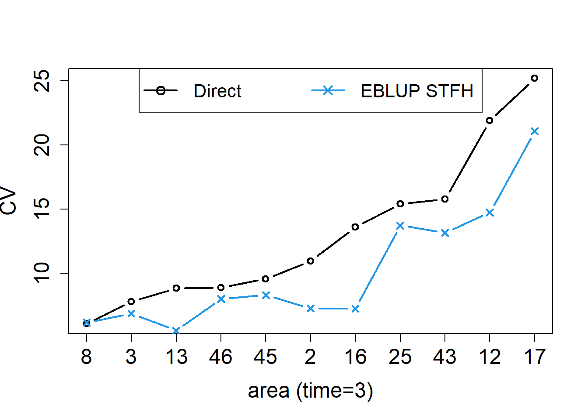
The left figure shows the STFH estimators, together with the direct estimates for each area at the last time point, with areas sorted by increasing CVs of direct estimators. The right figure shows the corresponding CVs. In this example, we can see that, even with a very small number of areas (D = 11) and time instants (T = 3) to borrow strength from, the STFH estimates follow closely direct estimates, but are slightly more stable than them, and have smaller estimated CVs for all the areas.
We also apply basic univariate FH models for each time instant, that is, crosssectionally, to analyze the differences with the results obtained from the STFH model. For this, we first select the data corresponding to each time instant and then call the function mseFH() using those separate data sets. STFH estimates are stored in an additional column of the data frame results:
data.time1<-spacetime[spacetime$Time==1,]
data.time2<-spacetime[spacetime$Time==2,]
data.time3<-spacetime[spacetime$Time==3,]
eblup.FH.res.time1<-mseFH(Y~X1+X2,vardir=Var,data=data.time1)
eblup.FH.time1<-eblup.FH.res.time1$est$eblup
results$eblup.FH[results$Time==1]<-eblup.FH.time1
eblup.FH.res.time2<-mseFH(Y~X1+X2,vardir=Var,data=data.time2)
eblup.FH.time2<-eblup.FH.res.time2$est$eblup
results$eblup.FH[results$Time==2]<-eblup.FH.time2
eblup.FH.res.time3<-mseFH(Y~X1+X2,vardir=Var,data=data.time3)
eblup.FH.time3<-eblup.FH.res.time3$est$eblup
results$eblup.FH[results$Time==3]<-eblup.FH.time3Let us now plot the STFH estimates, together with direct and cross-sectional FH estimates, for the first area (coded as Area=2) over the three time instants:
results.A1 <- results[results$Area == 2, ]
layout(1)
k<-3
m<-min(results.A1$DIR,results.A1$eblup.STFH,results.A1$eblup.FH)
M<-max(results.A1$DIR,results.A1$eblup.STFH,results.A1$eblup.FH)
plot(1:3,results.A1$DIR, type = "n", xlab = "Time",
ylab = "Estimates: First area", ylim = c(m,M+(M-m)/k), cex.axis = 1.5, cex.lab = 1.5, xaxt = "n")
axis(1, 1:3, 1:3, cex.axis = 1.5)
points(1:3,results.A1$DIR, type = "b", col = 1, lwd = 2, pch = 1)
points(1:3,results.A1$eblup.FH, type = "b", col = 3,lwd = 2,pch = 3)
points(1:3,results.A1$eblup.STFH, type = "b", col = 4,lwd = 2,pch = 4)
legend("top", legend = c("Direct", "EBLUP FH", "EBLUP STFH"), ncol = 2,
col = c(1,3,4),lwd = rep(2,3), pch = c(1,3,4), cex = 1.3)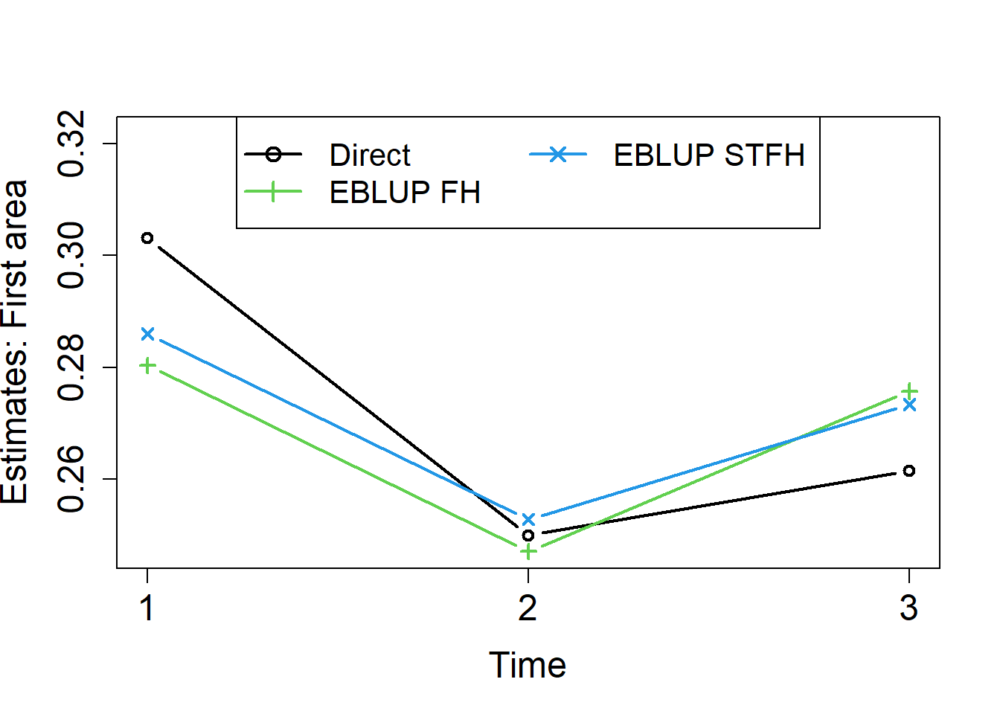
Finally, we repeat the process for the last area (coded as Area=46):
results.A11 <- results[results$Area == 46, ]
layout(1)
k<-3
m<-min(results.A11$DIR,results.A11$eblup.STFH,results.A11$eblup.FH)
M<-max(results.A11$DIR,results.A11$eblup.STFH,results.A11$eblup.FH)
plot(1:3,results.A11$DIR, type = "n", xlab = "Time",
ylab = "Estimates: Last area", ylim = c(m, M+(M-m)/k), cex.axis = 1.5, cex.lab = 1.5, xaxt = "n")
axis(1, 1:3, 1:3, cex.axis = 1.5)
points(1:3,results.A11$DIR, type = "b", col = 1, lwd = 2, pch = 1)
points(1:3,results.A11$eblup.FH, type = "b", col = 3,lwd = 2,pch = 3)
points(1:3,results.A11$eblup.STFH, type = "b", col = 4,lwd = 2,pch = 4)
legend("top", legend = c("Direct", "EBLUP FH", "EBLUP STFH"), ncol = 2,
col = c(1,3,4), lwd = rep(2,3), pch = c(1,3,4), cex = 1.3)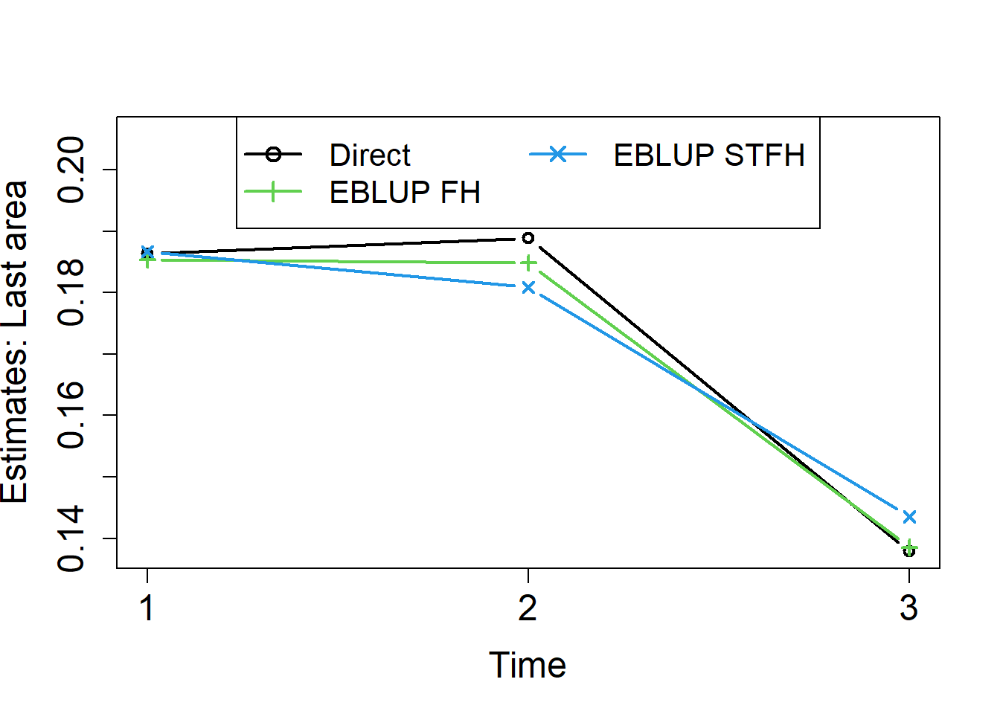
We did already see in the previous examples that direct estimators are unstable across areas. We can see that they are also the most unstable over time. Cross-sectional FH estimators applied for each time instant t = 1, 2, 3, are more stable across areas, but not necessarily over time. Figure 14 shows that STFH estimators are smoother over time than both, direct and cross-sectional FH estimates.